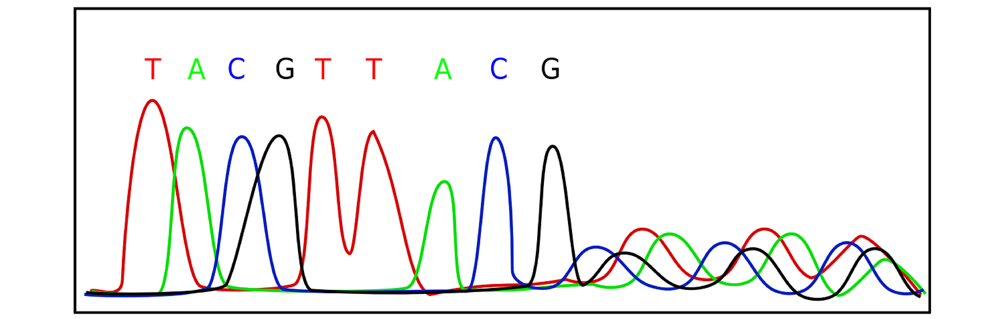
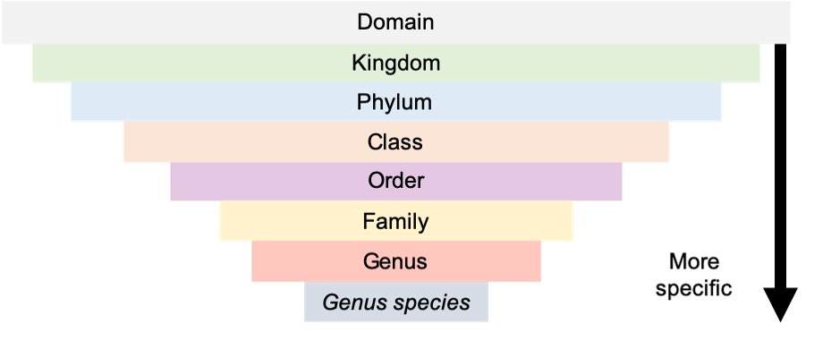

2 Introduction
2.1 Data in the biological sciences
Broadly defined, biology is the study of living things, from cells to ecosystems and everything in between. Data in the biological sciences can consist of observations from natural systems, manipulative experiments, and quantitative measurements of any sort. Biologists collect data in any of a number of ways, from observing natural systems and making a record of their observations (e.g., bird watching surveys) to measuring the concentration of hormones in cellular tissue to sequencing DNA from samples and comparing it to sequences collected from other samples. While biology as a science has been around for centuries, many of the data we collect in this century are facilitated by technological advances. For example, while early researchers such as Darwin and Mendel inferred that there must be some physical mechanism for encoding hereditary information, it wasn’t until 1944 that Avery first proposed that deoxyribonucleic acid could carry this hereditary information. By 1952, technological advances allowed Franklin to use X-rays to photograph the molecule, and then Watson and Crick used this vital information to determine that the shape of the DNA molecule was a double helix. With this critical piece of information in place, scientists worked tirelessly to develop technology that could be used to understand this molecule. Nirenberg discovered that nucleotide bases combined in groups of three to code for amino acids in 1965; Sanger developed technology for efficient sequencing of nucleotide bases in 1977; and by 1984 Mullis developed technology for polymerase chain reaction (PCR) which enabled scientists to magnify DNA in order to greatly increase the efficiency of sequencing reactions. Much of the data included in the PhylogatR database was collected using Sanger sequencing techniques and PCR.
 Chromatogram produced via Sanger Sequencing. Image from pixaby.com
In 1990, the United States government allocated $3 billion towards the Human Genome Project which aimed to produce the first complete sequenced of all the DNA in human chromosomes. This project took 13 years to complete using largely Sanger sequencing methods. Similarly, most of the data available via PhylogatR were funded by government investment in basic research. Government agencies such as the National Science Foundation ($8.1 billion annual budget) and the National Institutes of Health ($39 billion annual budget) in the United States funded millions of dollars in grant proposals in 2019, money that ultimately comes from taxpayers (by comparison, the U. S. spent about $670 billion on defense spending in 2019). Most of this research money pays salaries for the scientists that do basic research, but some of it is used to pay for sequencing DNA and other data collection. Luckily, the investment in the Human Genome Project led to dramatic improvements in the technology used for sequencing DNA, and ultimately lowered the costs associated with genome sequencing. Today, genomes from individual people can be sequenced for less than $1000, and these sequences are used to design individualized medical treatments for patients with cancer and other diseases. The biological sciences went from having very little genetic data to being positively flooded with data, and this has created a huge demand for skilled professionals to conduct bioinformatic analyses. These researchers are knowledgeable about biology and genetics, skilled in computational data analysis, and have the ability to solve problems in creative ways. Like many jobs that require science and technology skills, bioinformaticians command high salaries. The bioinformatics skills that you learn by working on exercises using phylogatR are directly transferrable to this profession.
2.2 Why species?
People in general and biologists in particular, find it useful to group things. You wouldn’t grab a book to read without knowing what genre it fell into right? Well, we can’t study species effectively if we don’t know what group they belong to either. Species are grouped into a hierarchical structure. The study of this hierarchical structure is called taxonomy. Organisms that are more closely related to one another, share more similar characteristics, and are therefore grouped together. The highest level of classification is Domain and contains three groups which are grouped together based on certain biochemical markers: Bacteria, Archaea, and Eukarya. Within the Eukarya are several Kingdoms including Animals, Plants, Fungi, and other single-celled Eukaryotes. All of these groups are split into smaller and smaller groups that are more specific the lower we go. In other words, the groups have more things in common as we move down the hierarchy. Species is the most specific we can get (though some people might argue that subspecies are a thing). Species are groups of individuals that are more similar to each other than they are to other individuals. Species are named using both their genus and species. For example, the scientific name for modern humans is Homo sapiens. This binomial naming convention has been used for centuries, starting with Carolus Linnaeus (1701-1778), a Swedish naturalist, and these names are used internationally by scientists. Since the category of species is so essential to the biological sciences, an entire discipline known as taxonomy has developed to discover and describe species. People devote their lives to this important work, with the aim to understand the relationships among all life on Earth in a field called systematics. You can visit the website for the Society for Systematic Biologists for more information on the work done by current systematists.

Throughout this book, we’ll focus our attention at the level of biological species. Species are one of the fundamental levels of biological organization and serve as a convenient transition between biological processes that operate within individuals (think metabolism, physiology, etc.) and the ecological ones that operate among individuals (think competition for resources, predation, etc.). Species are one of the ways that biological data are classified, in some sense they are analogous to different genres in literature. Just as all horror or mystery novels share certain attributes, the members of a species share certain biological characteristics. Notably, just as some horror novels are better than others, all individuals within a species are not identical, some are better at exploiting resources and thus are more likely to survive, reproduce, and leave offspring that do the same. These differences across individuals are essential to natural selection, the primary force that drives evolutionary change.
2.3 The Scientific Method
Before jumping into exercises that will teach you how to use PhylogatR, it would be useful to discuss the scientific method. While descriptions of this method vary, most science classes discuss a process where observations and information are used to form a hypothesis that make a prediction, which is then either supported or rejected by cleverly designed experiments. This approach to science is remarkably effective, and indirectly responsible for many of the technological advances that we take for granted every day. However, in order to apply this method to a historical science, we need to expand our view of the scientific method. Scientific disciplines such as paleontology, geology, and evolutionary biology are primarily concerned with understanding how historical processes have influenced the Earth in the present. The evidence used by these disciplines are often the results of the processes that we hope to learn about, for example the stratification in rock walls that we can observe in river canyons or the fossils of marine organisms that we can find in fossil beds far away from the ocean. Since testing hypotheses about the past cannot rely on experiments, scientists collect data and then those data to build and test conceptual models that explain historical processes that have shaped current features life. In order to build these models, scientists assume that the environmental forces which we can observe in the present, have also been acting in the past. For example, if a species is unable to survive in a harsh environment, such as extreme dryness and heat, it would not be found in areas with extreme dryness and heat, both now, and in the past. This viewpoint, known as uniformitarianism, enables scientists to gather evidence that pertains to historical processes and the apply this evidence to build conceptual models that can be tested and used to explain the history of a species. Throughout this book, we’ll develop some of these models, help you collect data using phylogatR, and then demonstrate how such data can be used to test these model. This process is analogous to designing an experiment and as such, offers a powerful approach to learning about the past.